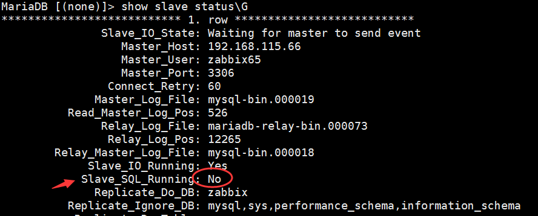
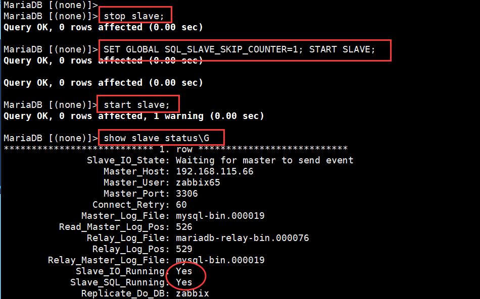
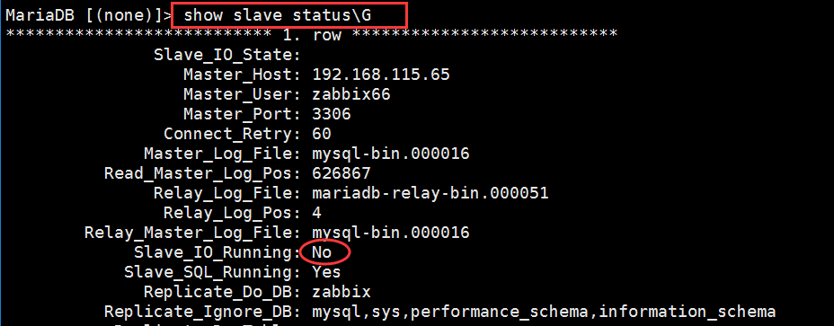
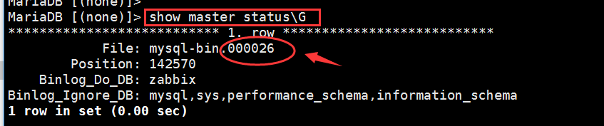
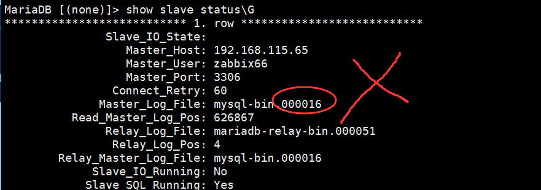
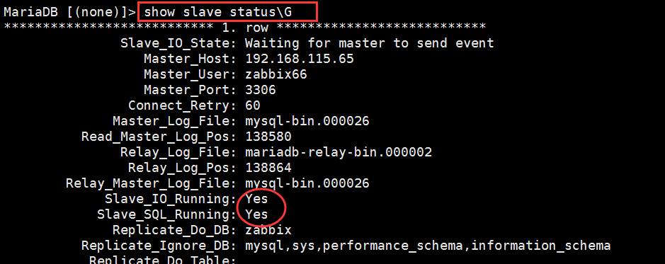

MySQL数据同步，出现Slave_SQL_Running：no和slave_io_running：no问题的解决方法
笔者：@神奇二进制
一、问题描述：
当我们配置好MySQL主主同步时，是可以实现主主同步，但是重启机器后或者其他原因导致MySQL无法同步了。
二、Slave两个关键进程
mysql replication 中slave机器上有两个关键的进程，死一个都不行，一个是slave_sql_running，一个是Slave_IO_Running，一个负责与主机的io通信，一个负责自己的slave mysql进程。
三、如果是Slave_SQL_Running：no：

解决办法如下：
MariaDB [(none)]> stop slave; MariaDB [(none)]> SET GLOBAL SQL_SLAVE_SKIP_COUNTER=1; START SLAVE; MariaDB [(none)]> start slave; MariaDB [(none)]> show slave status\G

四、如果是slave_io_running：no

解决办法如下：
1、查看主服务器
MariaDB [(none)]> show master status\G

2、在从服务器上查看

问题所在：发现Master_Log_File没有对应。
3、出现Slave_IO_Running: No的机器上操作
MariaDB [(none)]> slave stop;
MariaDB [(none)]>CHANGE MASTER TO MASTER_LOG_FILE='mysql-bin.000026', MASTER_LOG_POS=0;
MariaDB [(none)]> slave start;
MariaDB [(none)]> show slave status\G

到此问题就解决了！
作者：神奇二进制
文章出处：https://www.cnblogs.com/l-hh/
本文版权归作者和博客园共有，欢迎转载，但未经作者同意必须保留此段声明，且在文章页面明显位置给出原文链接，否则保留追究法律责任的权利。
文章如有叙述不当的地方，欢迎指正。如果觉得文章对你有帮助，可以精神上的支持 [推荐] 或者 [关注我] ，一起交流，共同进步！

【推荐】百度智能云 2022 开年见礼，开发者上云优惠专场在等你
【推荐】华为开发者专区，与开发者一起构建万物互联的智能世界